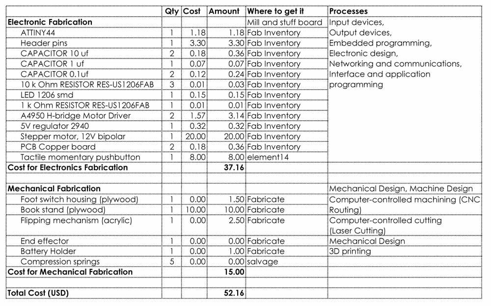
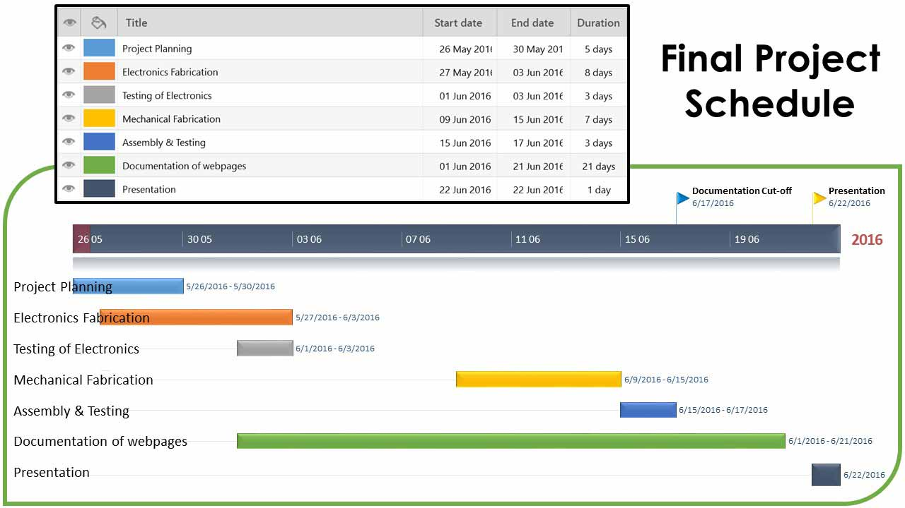

Propose a final project that integrates the range of units covered
Answer the following questions
Final Project Proposal
I would like to design and build an automatic page turner. Initially, the idea came from a conversation with my brother. My brother is currently taking a Masters programme and he has a lot of reading assignments. One of his complaints is having to hold on to a book for a long time, and that is very tiring. For that reason he bought a book stand so that he can rest his book on the stand and read without holding the book. My reply to that was, why not get an automatic page turner so you don't even have to turn the book?! This was how the idea to make one was born.
As the weeks pass, and I did more research, I found that there are more than a few reasons people need page turners. One group would be the disabled who need assistance turning pages either by controlling it with the push of a button or by voice or by breath. Another group is the musicians when both hands are engaged with the instrument, and at the same time face the challenge of turning the page of the score in front of them. I would like to design a page turner for the musicians, as it seems comparatively easier. You only need to flip forward, most of the time.
What will it do?
An automatic page turner controlled by a foot switch, flips a page forward at the push of the button. As my target audience are musicians during a performance, the entire process should be swift, quiet, and have high accuracy.
Who has done what beforehand?
There are a number of projects already done by others. I have listed below some of the designs others have done and uploaded to Youtube. They are inspiring projects that help me build mine.
What materials and components will be required? | How much will it cost? | Where will they come from? | What parts and systems will be made? | What processes will be used?
Most electronic components can be obtained from the supplies of Fab Inventory. As for the mechanical fabrication, I intend to use plywood and acrylic for the book stand and turning mechanism, and to 3D print the housing for the battery.

What tasks need to be completed?
Designing circuitry schematic and board design on EAGLE.
Designing the flipping mechanism using Corel Draw and lasercutting the design to acrylic material.
Designing the circuitry and housing of the external tactile pushbutton, as a foot switch.
Designing and fabricating a mount for the stepper motor using a 3D printer technology.
Programming the microcontroller to control the stepper motor at the press of a pushbutton using either Arduino IDE, or C programming.
Designing the bookstand together with the flipping mechanism or separately so that it can mount the flipping mechanism to it. Then fabricate it using the CNC router.
Designing an effective end effector, to lift the page of the book with accuracy.
Designing and fabricating a housing for the PCB circuitry using 3D printing technology.
The actual assembly of the electronic and mechanical components into a working prototype.
What questions need to be answered?
How to design circuitry of the external pushbutton?
How to design a suitable end effector that accurately flip the pages?
How to design the flipping mechanism? How does a 4-bar mechanism work?
How to calculate the torque required to move the flipping mechanism?
What type of stepper motor should be used? Unipolar or Bipolar? 5V or 12V?
How will the type of output device affect my circuitry design?
How to code the programme to do what I want it to do?
What is the schedule?

How will it be evaluated?
Successful triggering a page-flip at the push of a button.